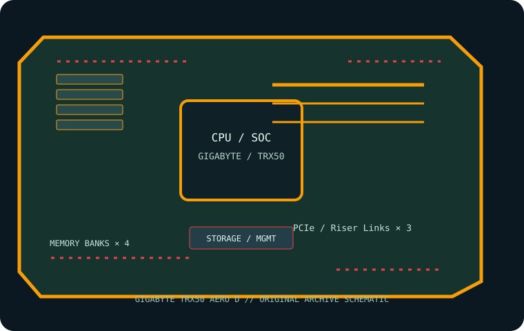

[ INDIVIDUAL COMPONENT // MOTHERBOARDS ]
GIGABYTE TRX50 AERO D
E-ATX sTR5 workstation motherboard, revision 1.0, for supported AMD Ryzen Threadripper-family CPUs. This page records the exact printed model and revision policy with manufacturer references.

MODEL / REVISION: PCB revision 1.0 (printed revision is part of the exact identification; do not use another revision’s firmware).
Specifications
| Exact model / revision | GIGABYTE TRX50 AERO D — PCB revision 1.0 (printed revision is part of the exact identification; do not use another revision’s firmware). |
|---|---|
| CPU and socket | One AMD sTR5 socket for supported Ryzen Threadripper 7000-series and Threadripper PRO 7000 WX processors; confirm exact CPU / BIOS pairing. |
| Chipset / platform | AMD TRX50. |
| Board size | E-ATX, 305 × 269 mm. Verify tower/rack chassis clearance. |
| Memory / ECC / registered | Four DDR5 ECC Registered DIMM sockets, quad-channel; RDIMM and RDIMM-3DS support (no UDIMM). Capacity and transfer rate depend on CPU, rank, BIOS and QVL. |
| PCIe / lanes | Three x16-length slots: two PCIe 5.0 and one PCIe 4.0; lane width and bifurcation are processor-dependent. Use the rev. 1.0 manual’s expansion table. |
| Storage | Three PCIe 5.0 x4 M.2 sockets plus one PCIe 4.0 x4 M.2, and eight SATA 6 Gb/s ports; check shared resources before populating expansion slots and M.2. |
| Networking / BMC | Marvell 10GbE and Realtek 2.5GbE LAN, onboard Wi-Fi 7 / Bluetooth. No BMC or IPMI controller. |
| Firmware / compatibility | Match firmware exactly to TRX50 AERO D rev. 1.0 and check the CPU support list. Use ECC RDIMMs from the QVL and the four-channel population order. The board has no remote BMC; Wi-Fi/ethernet do not provide out-of-band console. |
Compatibility and revision notes
Match firmware exactly to TRX50 AERO D rev. 1.0 and check the CPU support list. Use ECC RDIMMs from the QVL and the four-channel population order. The board has no remote BMC; Wi-Fi/ethernet do not provide out-of-band console.
Before installation, verify the physical revision and assembly label, CPU support list and minimum BIOS; confirm the exact memory type (UDIMM versus registered DIMM), channel population, chassis form factor, PCIe lane routing and storage connector modes against the linked vendor manual. A mechanically compatible socket does not guarantee CPU, firmware, ECC or lane compatibility.
Preservation and service
Record BIOS and BMC versions, serial and MAC labels, installed processors and DIMM part numbers, risers/cables, and test conditions. Use ESD-safe handling, correct socket procedure and chassis airflow. Do not cross-flash firmware from a similarly named board or revision.
Sources & further reading
- GIGABYTE — TRX50 AERO D rev. 1.0 specificationsManufacturer reference for the exact board model; use its support/QVL/manual details to verify population and compatibility.
- GIGABYTE — rev. 1.0 manuals and support downloadsManufacturer reference for the exact board model; use its support/QVL/manual details to verify population and compatibility.
Manufacturer model-specific references take precedence. Recheck CPU support, QVL, lane tables and current firmware for the printed board revision before service.